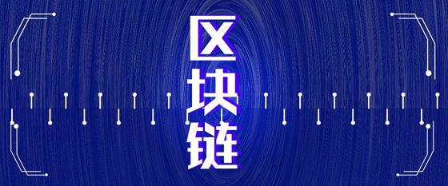

Block Chain
Block chain is a shared distributed database technology. Although the wording of the one-sentence introduction to the block chain varies from report to report, the following four technical features are consensual.
1. Decentralization: The centralization is the main characteristic of today's financial system, tomorrow will be the emerging decentralized financial system, which has no intermediaries, and all nodes have equal rights and obligations. Any node stop will not affect the overall operation of the system;
2. Trustless:All nodes in the system can trade without trust because the database and the system as a whole are open and transparent, and nodes cannot cheat each other within the rules and time frames of the system
3. Collectively Maintain:The system is maintained by all the nodes with maintenance function, and all of them participate in the maintenance work.
4. Reliable Database:Each node in the system has the latest full copy of the database, and modifying the database of a single node is invalid because the system automatically compares the same data that appears the most frequently as true。